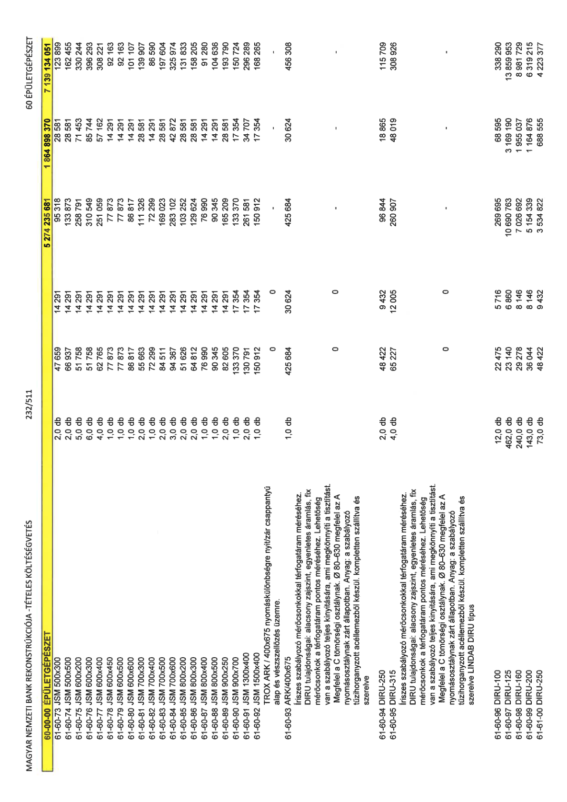

| Tétel | Menny. | Egys. | Anyag e.ár (net HUF) | Díj e.ár (net HUF) | Anyag összesen (net HUF) | Díj összesen (net HUF) | Anyag+Díj összesen (net HUF) |
|---|---|---|---|---|---|---|---|
| 61-60-73 JSM 500x300 | 2,0 | db | 47 659 | 14 291 | 95 318 | 28 581 | 123 899 |
| 61-60-74 JSM 500x500 | 2,0 | db | 66 937 | 14 291 | 133 873 | 28 581 | 162 455 |
| 61-60-75 JSM 600x200 | 5,0 | db | 51 758 | 14 291 | 258 791 | 71 453 | 330 244 |
| 61-60-76 JSM 600x300 | 6,0 | db | 51 758 | 14 291 | 310 549 | 85 744 | 396 293 |
| 61-60-77 JSM 600x400 | 4,0 | db | 62 765 | 14 291 | 251 059 | 57 162 | 308 221 |
| 61-60-78 JSM 600x450 | 1,0 | db | 77 873 | 14 291 | 77 873 | 14 291 | 92 163 |
| 61-60-79 JSM 600x500 | 1,0 | db | 77 873 | 14 291 | 77 873 | 14 291 | 92 163 |
| 61-60-80 JSM 600x600 | 1,0 | db | 86 817 | 14 291 | 86 817 | 14 291 | 101 107 |
| 61-60-81 JSM 700x300 | 2,0 | db | 55 663 | 14 291 | 111 326 | 28 581 | 139 907 |
| 61-60-82 JSM 700x400 | 1,0 | db | 72 299 | 14 291 | 72 299 | 14 291 | 86 590 |
| 61-60-83 JSM 700x500 | 2,0 | db | 84 511 | 14 291 | 169 023 | 28 581 | 197 604 |
| 61-60-84 JSM 700x600 | 3,0 | db | 94 367 | 14 291 | 283 102 | 42 872 | 325 974 |
| 61-60-85 JSM 800x200 | 2,0 | db | 51 626 | 14 291 | 103 252 | 28 581 | 131 833 |
| 61-60-86 JSM 800x300 | 2,0 | db | 64 812 | 14 291 | 129 624 | 28 581 | 158 205 |
| 61-60-87 JSM 800x400 | 1,0 | db | 76 990 | 14 291 | 76 990 | 14 291 | 91 280 |
| 61-60-88 JSM 800x500 | 1,0 | db | 90 345 | 14 291 | 90 345 | 14 291 | 104 636 |
| 61-60-89 JSM 900x250 | 2,0 | db | 82 605 | 14 291 | 165 209 | 28 581 | 193 790 |
| 61-60-90 JSM 900x700 | 1,0 | db | 133 370 | 17 354 | 133 370 | 17 354 | 150 724 |
| 61-60-91 JSM 1300x400 | 2,0 | db | 130 791 | 17 354 | 261 581 | 34 707 | 296 289 |
| 61-60-92 JSM 1500x400 | 1,0 | db | 150 912 | 17 354 | 150 912 | 17 354 | 168 265 |
| TROX ARK / 400x675 nyomáskülönbségre nyit/zár csappantyú alap és vészszellőzés üzemre. | 0 | 0 | 0 | 0 | 0 | 0 | 0 |
| 61-60-93 ARK/400x675 | 1,0 | db | 425 684 | 30 624 | 425 684 | 30 624 | 456 308 |
| Íriszes szabályozó mérőcsonkokkal térfogatáram méréséhez. DIRU tulajdonságai: alacsony zajszint, egyenletes áramlás, fix mérőcsonkok a térfogatáram pontos méréséhez. Lehetőség van a szabályozó teljes kinyitására, ami megkönnyíti a tisztítást. Megfelel a C tömörségi osztálynak. Ø 80–630 megfelel az A nyomásosztálynak zárt állapotban. Anyag: a szabályozó tűzihorganyzott acéllemezből készül. kompletten szállítva és szerelve | 0 | 0 | 0 | 0 | 0 | 0 | 0 |
| 61-60-94 DIRU-250 | 2,0 | db | 48 422 | 9 432 | 96 844 | 18 865 | 115 709 |
| 61-60-95 DIRU-315 | 4,0 | db | 65 227 | 12 005 | 260 907 | 48 019 | 308 926 |
| Íriszes szabályozó mérőcsonkokkal térfogatáram méréséhez. DIRU tulajdonságai: alacsony zajszint, egyenletes áramlás, fix mérőcsonkok a térfogatáram pontos méréséhez. Lehetőség van a szabályozó teljes kinyitására, ami megkönnyíti a tisztítást. Megfelel a C tömörségi osztálynak. Ø 80–630 megfelel az A nyomásosztálynak zárt állapotban. Anyag: a szabályozó tűzihorganyzott acéllemezből készül. kompletten szállítva és szerelve LINDAB DIRU típus | 0 | 0 | 0 | 0 | 0 | 0 | 0 |
| 61-60-96 DIRU-100 | 12,0 | db | 22 475 | 5 716 | 269 695 | 68 595 | 338 290 |
| 61-60-97 DIRU-125 | 462,0 | db | 23 140 | 6 860 | 10 690 763 | 3 169 190 | 13 859 953 |
| 61-60-98 DIRU-160 | 240,0 | db | 29 278 | 8 146 | 7 026 692 | 1 955 037 | 8 981 729 |
| 61-60-99 DIRU-200 | 143,0 | db | 36 044 | 8 146 | 5 154 339 | 1 164 876 | 6 319 215 |
| 61-61-00 DIRU-250 | 73,0 | db | 48 422 | 9 432 | 3 534 822 | 688 555 | 4 223 377 |
